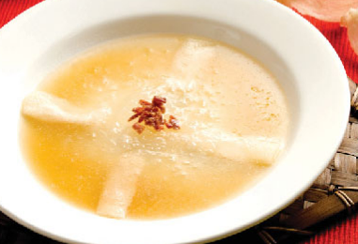
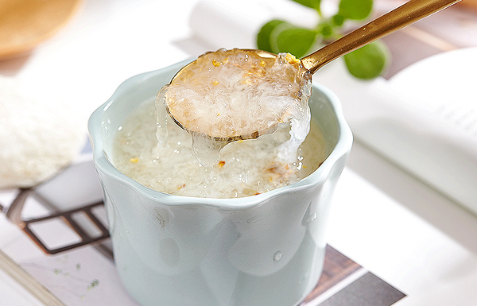

原文连接:https://www.daquan.com/post/12918.html
孕妇吃燕窝最好的时候就是怀孕的前三个月。孕妇在怀孕的前三个月是没有什么孕检，检查的，一般都是吃叶酸。可以在前三个月吃燕窝能帮助胎儿的发育，备孕也可以吃燕窝滋补能够帮助胚胎的着床。燕窝主要是长期服用的，孕妇在早上空腹和晚上睡觉前食用燕窝是最好的。
孕妇吃燕窝的最佳时段
1、 怀孕的前三个月
孕妇吃燕窝最好的时候就是怀孕的前三个月开始吃，这是因为怀孕的前三个月吃燕窝能帮助胚胎的稳定还有可以帮助胚胎的发育。怀孕的前三个月是最关键的三个月，这三个月里一般是没有孕检检查的，但是这三个月是最容易流产的三个月。怀孕前三个月坚持每天吃燕窝能帮助胚胎的稳定，还能营养胚胎，帮助发育。
2、 备孕期间

备孕期间的女性是可以吃燕窝的，特别是年纪超过28岁的女性还有长期宫寒的女性，在备孕期间食用燕窝是非常好的。这是因为燕窝有非常高的营养，燕窝能够有效的滋补身体，备孕期间吃燕窝能够帮助胚胎的着床，并且能够稳定胚胎，避免流产。
3、 早上空腹和睡觉前食用
孕妇吃燕窝最好的时候就是早上8点以前空腹食用，和晚上10点半后睡觉前空腹食用。这两个时间点都是吸收营养最好的时间，这两个时间点食用燕窝能有效的吸收燕窝的营养，并且比其他时候吸收的营养更高。所以孕妇最好早上和晚上各吃一碗炖燕窝。
孕妇吃燕窝怎么炖
1、 用鸡汤炖

燕窝可以用鸡汤炖，但是一定要注意鸡汤需要先炖，并且口味要清淡，然后用鸡汤的清汤和燕窝同炖。孕妇尽量饮食清淡，因为太过辛辣的饮食会导致体内火气重，怀孕期间本身孩子就是阳气重，再吃辛辣的和温补太过的食材很容易导致孕妇口腔溃疡、上火。有相关报告有指出孕妇体内火气重，是很容易导致孩子出生出现新生儿黄疸的。
2、 用椰奶炖

孕妇吃燕窝可以用椰奶还有牛奶炖，可以帮助缓解疲劳，改善睡眠，还能帮助孕妇补钙。孕妇在怀孕期间一定要注意补钙，孕妇补钙可以帮助孩子的生长发育。孕妇还要注意多晒晒太阳，太阳可以帮助人体补充维生素D，能够帮助钙的吸收。
3、 和其他安胎药一起炖
如果有习惯性流产的还有胎象不好的，建议将燕窝和其他安胎药以及鸡汤同炖，能帮助安胎治疗胎动不安以及习惯性流产。如果习惯性流产建议在备孕期间就要开始使用燕窝滋补身体。
结语：通过上文的介绍，相信大家都了解了关于孕妇吃燕窝的最佳时段，孕妇在怀孕前三个月吃燕窝有着保胎和营养胚胎的功效。孕期的前三个月食用燕窝是最好的，最好的使用时间就是早上和晚上。